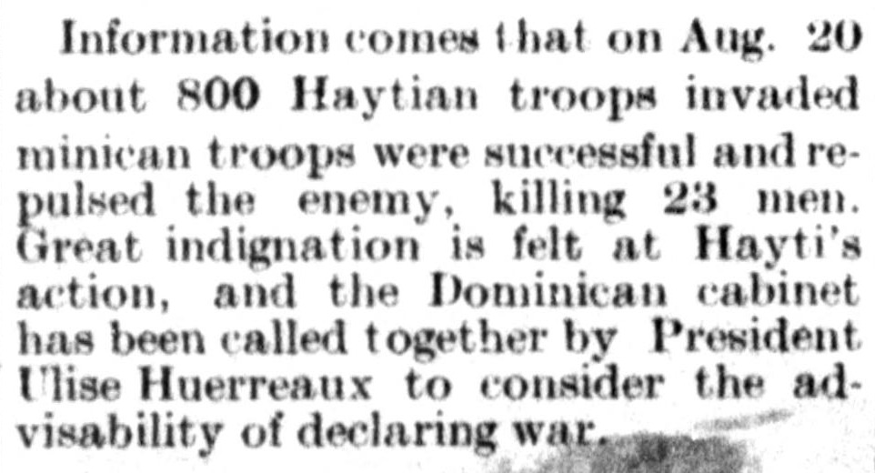

Great indignation is felt at Hayti’s action, and the Dominican cabinetSe siente gran indignación por la acción de Haití, y el gabinete dominicano
The Desmet Leader. DeSmet, Kingsbury Co., Dakota [S.D.], August 30, 1890. Page 4. View the originalVer el original

According to the newspaper report, Haytian troops invaded the Dominican Republic on August 20, but Dominican troops successfully repulsed the enemy and killed 25 men. In response to the invasion, which caused great indignation, President Ulises Heureaux called together the Dominican cabinet to consider declaring war.Según el informe periodístico, tropas haitianas invadieron la República Dominicana el 20 de agosto, pero las tropas dominicanas repelieron con éxito al enemigo y mataron a 25 hombres. En respuesta a la invasión, que provocó gran indignación, el presidente Ulises Heureaux reunió al gabinete dominicano para considerar la declaración de guerra.
FULL TEXT:TEXTO COMPLETO:
Information comes that on Aug. 20 about 800 Haytian troops invaded minican troops were successful and repulsed the enemy, killing 23 men. Great indignation is felt at Hayti's action, and the Dominican cabinet has been called together by President Ulise Huerreaux to consider the advisability of declaring war.Llega información de que el 20 de agosto unos 800 soldados haitianos invadieron tropas minicanas tuvieron éxito y repelieron al enemigo, matando a 23 hombres. Gran indignación se siente por la acción de Haití, y el gabinete dominicano ha sido convocado por el presidente Ulise Huerreaux para considerar la conveniencia de declarar la guerra.